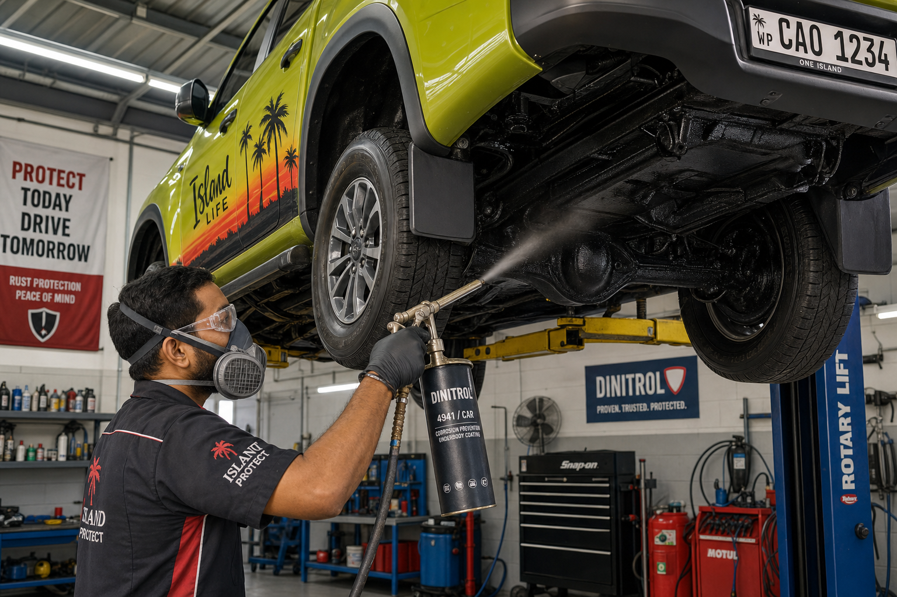

Rust is the silent destroyer of vehicles in Hawaii. While our islands are paradise for people, they're a relentless corrosive environment for metal. The combination of salt air, high humidity (often 70–85%), tropical rain, and UV exposure creates conditions that accelerate rust formation dramatically compared to most mainland states.
Where Rust Starts on Hawaii Vehicles
Rust doesn't announce itself — it begins in hidden areas and spreads silently. The most vulnerable locations on Hawaii vehicles include: the undercarriage and frame rails (exposed to road spray and puddles), wheel wells where salt-laden moisture pools, rocker panels at the base of door openings, door bottoms and seams where water collects, around windshield and rear window seals, and any area with paint chips or rock damage.
The Three Stages of Rust
Surface rust is the earliest stage — oxidation on exposed metal that hasn't penetrated deeply. This is easily treated with sanding, rust converter, and touch-up paint. Scale rust occurs when oxidation has eaten through the surface and begins flaking. This requires grinding back to bare metal and applying sealer before repainting. Penetrating rust has eaten through the metal entirely, creating holes. At this stage, panels must be cut out and replaced.
Annual Undercarriage Inspection
Every Hawaii vehicle should have its undercarriage professionally inspected annually. Look for rust on the frame, brake lines (particularly vulnerable to corrosion), fuel lines, suspension components, and exhaust system. A rusty brake line failure can be catastrophic — don't skip this inspection.
Undercoating and Rust-Proofing
New vehicles benefit enormously from professional undercoating applied before the first signs of rust appear. Products like rubberized undercoating, oil-based rustproofing, and electronic rust inhibitors are all effective. For older vehicles showing early rust signs, rust converter products neutralize active rust and provide a paintable surface.
Garage Storage Makes a Huge Difference
If you have access to a garage, use it. Overnight storage protects your vehicle from dew, salt air settling on cool surfaces, and the thermal cycling that accelerates paint and metal fatigue. Even a carport provides significant protection over open-air parking near the ocean.
Treating Existing Rust Before It Spreads
If you spot rust forming, act quickly. Small rust spots treated promptly cost $50–$200 to repair. The same spot ignored for 12–18 months in Hawaii's climate can spread to require panel replacement at $500–$2,000+. Our rust repair services at Tradewind Auto Body use marine-grade rust converters and OEM-quality primers to stop rust in its tracks and restore your vehicle's appearance and structural integrity.
Don't wait until rust becomes a major structural issue. A proactive approach to rust prevention will save you thousands of dollars and keep your vehicle safe and roadworthy for years on the islands.